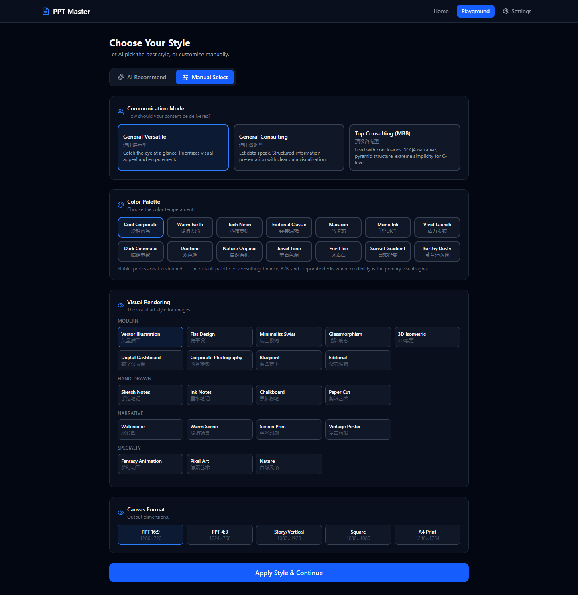
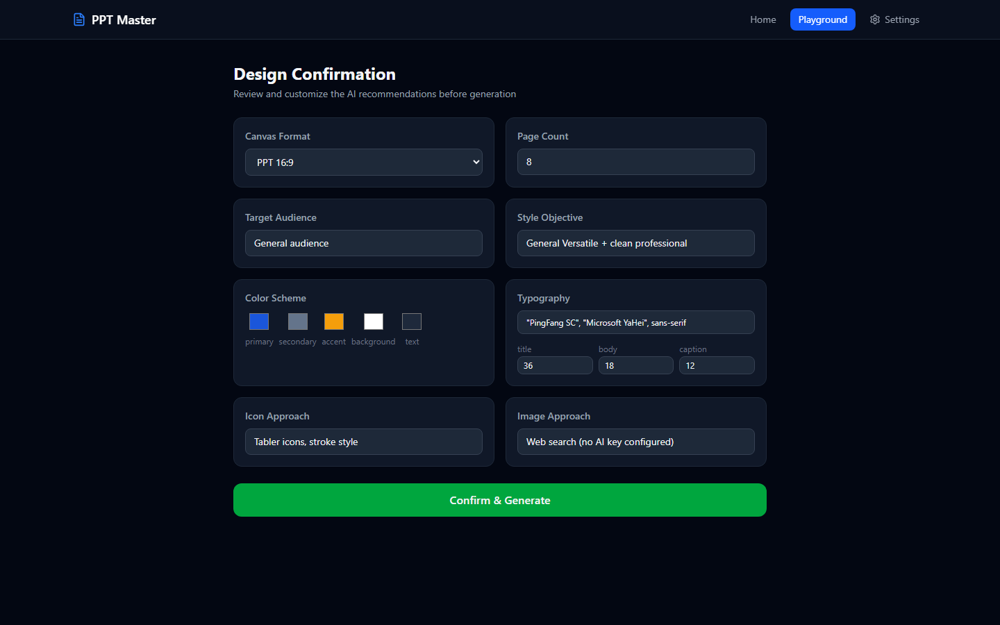
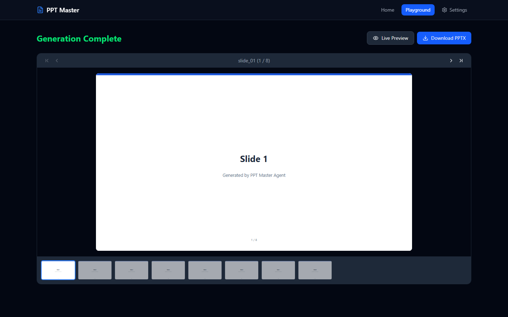

Multi-Agent 编排与 Orchestrator 模式
Agentic Workflow用 Prompt Chaining 将 PPT 生成拆成 Supervisor → Strategist → Executor。 Supervisor 负责路由、状态传递和错误恢复；Agent 之间用 Handoff Protocol 传递结构化上下文，减少多 Agent 协作中的上下文漂移。
Harness 架构设计：关注点分离
系统架构核心是 harness + model = agent：模型负责理解与生成，Harness 负责规则、脚本和质量门禁。 通过 spec_lock.md 把设计决策变成机器可校验契约，逐页检查颜色、字体和 SVG 合法性。 工程上复用成熟转换引擎，把创新集中在 Agent 编排和交互层。
Tool-Use / Function Calling 设计
Agent Tools基于 OpenAI Function Calling 标准组织 15+ 工具，并按 Agent 职责分配： 文档转换、图片分析、SVG 质检、PPTX 导出各自隔离。 每个工具都有明确 Schema 和读写边界，既让模型能自主调用，也控制工具爆炸半径。
Human-in-the-Loop 确认机制
交互设计Strategist 先产出 8 项设计推荐，管道进入 BLOCKING 检查点。 用户在前端可编辑卡片中集中确认画布、配色、图标、排版和图片策略后，生成流程才继续。 关键决策集中确认，避免后续页面风格被反复打断和漂移。
Agent 间 Spec-as-Contract 传递
Agent 通信Agent 间传递的不是聊天记录，而是 design_spec.md 与 spec_lock.md 两份契约。 前者说明设计理由，后者锁定颜色、字体和图标等执行参数。 Executor 每页生成前强制重读 spec_lock，降低长文档生成中的颜色和字体漂移。
Guardrails 与 Fallback 策略
安全与韧性SVG 生成后进入 10 项质量检查：合法性、viewBox、禁止元素、字体尾族和 spec_lock 漂移。 error 阻断导出，warning 提示修复；LLM 不可用时降级到规则引擎推荐风格。 API Key 仅存 sessionStorage，不落服务端磁盘，降低安全风险。


